PaperWeekly 第十三期
引言
本期的PaperWeekly一共分享四篇最近arXiv上放出的高质量paper，包括：机器翻译、表示学习、推荐系统和聊天机器人。人工智能及其相关研究日新月异，本文将带着大家了解一下以上四个研究方向都有哪些最新进展。四篇paper分别是：
1、A General Framework for Content-enhanced Network Representation Learning, 2016.10
2、Collaborative Recurrent Autoencoder: Recommend while Learning to Fill in the Blanks, 2016.11
3、Dual Learning for Machine Translation, 2016.11
4、Two are Better than One: An Ensemble of Retrieval- and Generation-Based Dialog Systems, 2016.10
A General Framework for Content-enhanced Network Representation Learning
作者
Xiaofei Sun, Jiang Guo, Xiao Ding and Ting Liu
单位
Center for Social Computing and Information Retrieval, Harbin Institute of Technology, China
关键词
network representation, content-enhanced
文章来源
arXiv
问题
同时利用网络结构特征和文本特征来学习网络中节点的embedding
模型
总的来说这篇paper的思路比较清晰，学习的方法上很大程度上参考了word2vec的方法。对于一个节点v，将与v相连的节点当做正例，不想连的节点当做负例。那么如何融入内容呢？在网络中设置虚拟的内容节点c，将描述v节点的文本内容c_v当做正例，其他的当做负例c_v’。在优化时同时考虑网络相似性和文本相似性，让v的向量靠近正例远离负例。
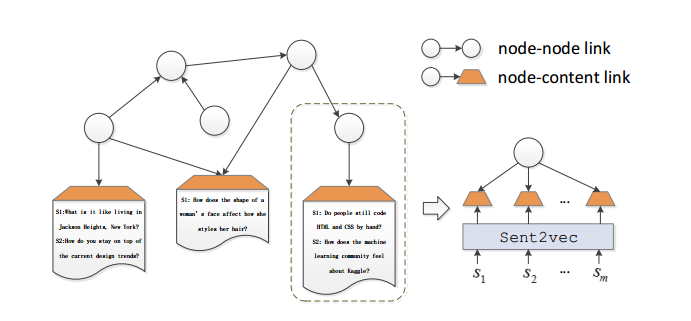
总的优化函数如下所示，由两个部分L_nn(节点与节点连接)和L_nc(节点与内容连接)线性组合而成，alpha越大则考虑网络结构越多文本内容越少。
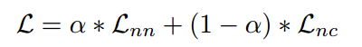
L_nn和L_nc大体思想如上面所言，两者损失函数一致，尽量接近正例远离反例。但是两者在描述节点概率（相似度）上会有所不同。

对于节点与节点之间的概率，由于网络结构要考虑有向性，因此将节点的embedding切分成in和out两半，用sigmoid算两个节点的相似度。
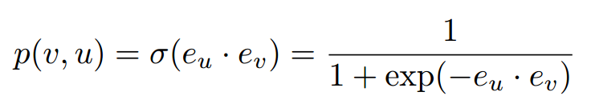
节点与内容的概率也是类似，不过内容节点的embedding是固定的，通过额外的文本模型训练出来的。这里尝试的文本model包括word2vec，RNN和BiRNN。
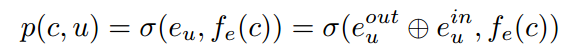
最后在节点分类任务上进行了评测，同时结合网络结构特征和文本特征确实带来了明显的提高。
资源
用到的数据集是DBLP（cn.aminer.org/citation）和自己采集的知乎用户网络。
相关工作
这两年network representation的工作如雨后春笋，在DeepWalk之后有十余篇论文出现。这篇文章在相关工作里有相对全面的覆盖，对这方面工作有兴趣的同学值得参考。
简评
尽管相关模型层出迭见，但略感遗憾的是感觉目前并没有在network embedding之上的较为成功的应用，大多benchmark都是节点分类和链接预测，应用价值有限。十分期待一些更为新颖的benchmark的出现。
Collaborative Recurrent Autoencoder Recommend while Learning to Fill in the Blanks
作者
Hao Wang, Xingjian Shi, Dit-Yan Yeung
单位
HKUST
关键词
Recommendation, Collaborative Filtering, RNN
文章来源
Arxiv, to appear at NIPS’16
问题
本文的主要贡献是提出collaborative recurrent autoencoder (CRAE)，将CF (collaborative filtering)跟RNN结合在一起，提高推荐的准确率，并且可以用于sequence generation task。
模型
传统的LSTM模型没有考虑进噪声，对不足的训练数据稳定性不好，文章提出RRN (robust recurrent networks)，为RNN的加噪版本，RRN中的噪声直接在网络中向前或者向后传播，不需要分开的网络来估计latent variables的分布，更容易实现且效率高。CARE的模型如下图所示，序列处理的信息保存在cell state s_t和输出状态h_t中，两个RRN可以组合形成编码译码结构。
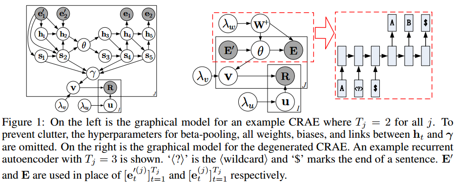
Wildcard denoising的目的是缓解overfitting，做法是随机选择一些词，替换成
Learning的过程采用MAP，类似于CDL和DTR。学到矩阵U和V之后，我们可以预计评分矩阵R。
资源
相关工作
选取当中两个比较有意思的work。
1、CTR (collaborative topic reguression)
将topic model和probabilistic matrix factorization (PMF)，但是CTR采用bag-of-words的表示形式，忽略了词序和每个词的局部语境，而这些对文章表示和word embeddings能提供有价值的信息。
2、CDL (collaborative deep learning)
将CF和probabilistic stacked denoising autoencoder (SDAE)结合起来，是一个以bag-of-words为输入的feedforward模型，并不能解决sequence generation的问题。
简评
这篇文章将RNN用于recommendation，并且与rating matrix结合起来，比较有意思，而且考虑了数据稀疏的情况，pooling的方法也值得借鉴。
Dual Learning for Machine Translation
作者
Yingce Xia1, Di He, Tao Qin, Liwei Wang, Nenghai Yu1, Tie-Yan Liu, Wei-Ying Ma
单位
1.University of Science and Technology of China
2.Key Laboratory of Machine Perception (MOE), School of EECS, Peking University
3.Microsoft Research
关键词
Dual Learning, Machine Translation, Deep Reinforcement Learning
文章来源
arXiv, 1 Nov 2016
问题
文章针对机器翻译时需要的人工标注的双语平行语料获取代价高的问题，提出了Dual Learning Model使用单语语料来进行训练，取得了比使用双语平行语料训练的模型更好的结果。
模型
模型的核心思想见下图：
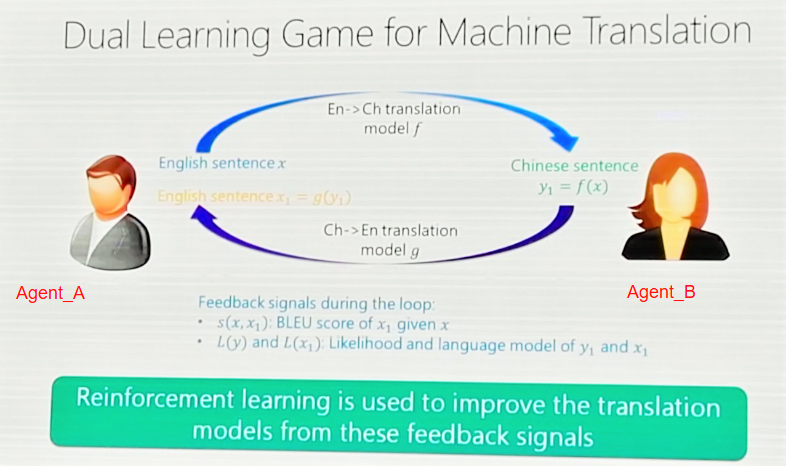
(注:上图来自CCL2016马维英老师PPT)
对上图的详细解释：
模型中有两个Agent，Agengt_A和Agent_B,Agent_A只能够理解A语言，Agent_B只能理解B语言，model f是将A语言翻译成B语言的翻译模型，model f是将B语言翻译成A语言的翻译模
型。上图的执行过程可以按照下面的解释进行：
1、Agent_A 发送一句A语言的自然语言的话X1
2、model f将X转换成为B语言的自然语言Y
3、Agent_B收到Y，并将Y 传送给model g
4、model g将Y转换成源语言A的自然语言X2
5、比较X1和X2的差异性，并给出反馈.并进行1到4的反复训练
模型的算法过程：
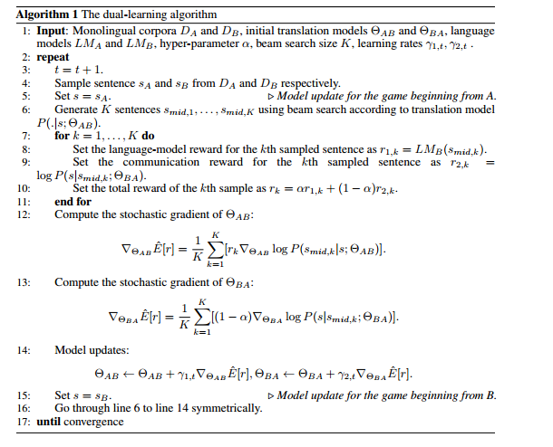
在step8的时候对翻译模型翻译的结果使用语言模型做了一个判定，判定一个句子在多大程度上是自然语言。step9是给communication一个reward，step10将step8和step9加权共同作为样例的reward.然后使用policy gradient进行优化。
需要说明的model f和model g是已有的模型或者说在刚开始的时候使用少量的双语语料进行训练得到吗，然后逐渐加大单语语料的比例。
资源
NMT code:https://github.com/nyu-dl
compute BLEU score by the multi-bleu.perl:https://github.com/moses-smt/mosesdecoder/blob/master/scripts/generic/multi-bleu.perl
相关工作
1、the standard NMT, Neural machine translation by jointly learning to align
and translate. ICLR, 2015.
2、pseudo-NMT, Improving neural machine translation models with monolingual data. In ACL, 2016.
简评
本文的思想很创新，利用了机器翻译中的dual mechinism，仅仅利用少部分双语语料和大部分单语语料就可以达到之前NMT的效果，甚至还高了2到3个百分点。
dual的思想不仅可以用于机器翻译中，还可以用于图片、语音、文字等多种语言的共同学习，这样的相互作用共同学习更接近于人类对周围世界认识的方式，接受来自各个方面的信心，综合进行学习。
Two are Better than One: An Ensemble of Retrieval and Generation-Based Dialog
作者
Yiping Song, Rui Yan, Xiang Li, Dongyan Zhao, Ming Zhang
单位
北京大学
关键词
对话系统、open domain、chatbot
文章来源
arXiv
问题
对话系统中可将问题和检索的结果同时作为输入Encoder之后进行解码Decoder，再将生成的结果和原检索结果重排序
模型
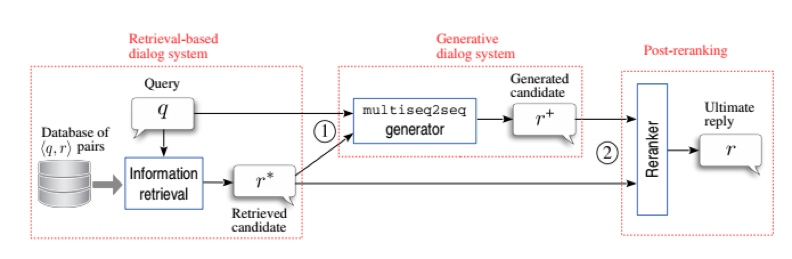
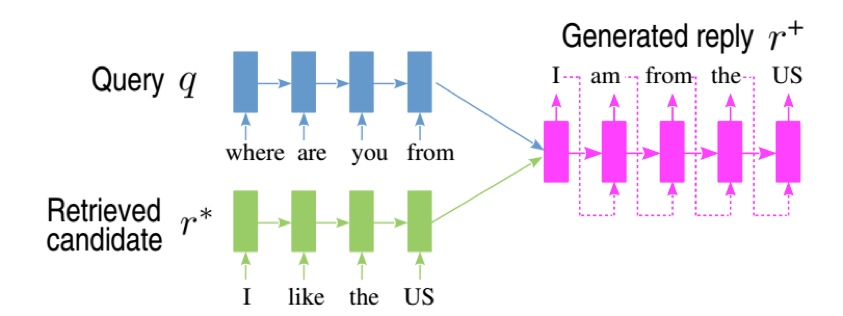
相关工作
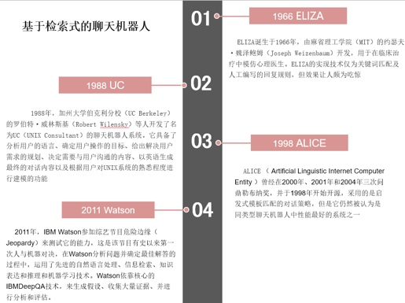
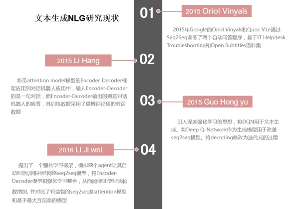
简评
作者的思路非常简单，原来的回复生成模型容易发生回复内容短或者回复信息无意义的问题，在此作者将候选结果和原来的问句同时作为RNN生成器的输入，生成结果后再将本次生成的结果加入原检索候选集中，进行重新排序，实验结果证明此种方法比单独使用检索或单独使用生成效果有大幅提升。
总结
新的研究成果不见得可以直接应用于工程中，但新的paper，尤其是高质量paper中，一定会有很多的创新点，每一个创新点都可能会为后续的研究、工程实现等带来启发，甚至是一些技术上的突破。从本期开始，PaperWeekly会不定期地分享类似的内容，以方便大家了解最新的研究成果。